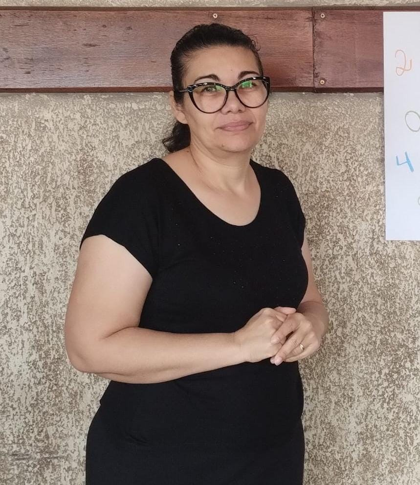

👩👧 Sobre
Kelly Cristina Carrilho Macedo
Nascida em 02/01/1977, passou a infância em Marília - SP, onde viveu até os 16 anos. Depois disso, por conta do trabalho da família, se mudou para Americana - SP. Veio de uma família simples, mas cheia de amor, união e compaixão — onde um sempre cuidava do outro. Começou a trabalhar desde cedo, passou por dificuldades na carreira e muitas vezes saía cedo de casa e só chegava à noite.
Se casou, e em 2008 teve o seu o seu primeiro filho, e em 2013 o segundo. Ela luta todos os dias para dar tudo o que não foi possível em sua infância, mas sem deixar de lado o temor a Deus em suas vidas.
📸 Nossa Inspiração
🌸 Curiosidades
- Adora cuidar de plantinhas 🌿
- Faz o melhor bolo de cenoura c/ chocolate 🍰
- E não pode faltar a torta de presunto e queijo 🥧
- Ama filmes, mas apaga no sofá 🛋️
- Tem um coração do tamanho do mundo ❤️
🌸 Frases mais ditas
- "Na volta a gente compra"
- "Em casa a gente conversa"
- "Você não é todo mundo"
- "Se eu encontrar, vou esfregar na sua cara"
💌 Mensagem
Mãe, obrigado por tudo, pelos momentos de felicidade, por sempre nos apoia e incentiva, está ao nosso lado mesmo quando não estamos raciocinando muito bem hahahaha. Você é nossa base, nossa força e nosso amor eterno. Feliz Dia das Mães! 🌷💖